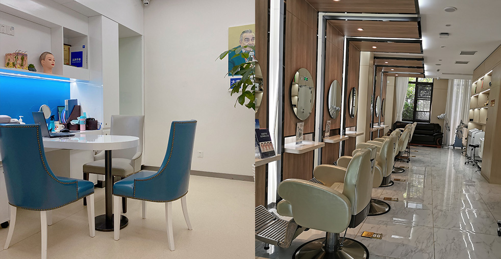

A beard transplant is a specialized procedure that restores missing, patchy, or thin facial hair by transplanting healthy follicular units from a donor area — typically the back of the scalp — to the beard region. The result is permanent, natural-looking facial hair that grows just like your natural beard and can be shaved, trimmed, and styled however you like.
Many men struggle with genetics that make it impossible to grow a full, even beard. Whether you have patchy cheeks, a thin mustache, sparse sideburns, or simply can't grow facial hair at all, a beard transplant can solve all of these concerns. The transplanted hair is your own — it responds to shaving, grows at a natural rate, and blends seamlessly with any existing facial hair.
The key to a natural-looking result lies in understanding facial hair growth patterns. Beard hair grows at different angles than scalp hair, and the direction varies across every area of the face. Our surgeons use specialized techniques that replicate these natural patterns precisely, so your transplanted beard looks like it grew naturally — never like it was implanted.
If genetics left you with hair in some spots but not others, our transplant fills in the gaps for a uniform, full-looking beard across your entire face.
Some men simply can't grow a beard no matter what they try. Our procedure creates the facial hair your genetics didn't provide — permanently.
Whether from accidents, surgery, acne, or burns, we can transplant healthy follicles directly into scar tissue to restore a seamless beard line.
Want sharper cheek lines, a fuller goatee, or more defined sideburns We can sculpt and refine your existing beard to match the style you've always wanted.
Step 1 — Custom Beard Design: Before the procedure begins, we work closely with you to design your ideal beard shape. We mark the exact lines and boundaries directly on your face, ensuring the final result perfectly matches your vision. Whether you're after a full beard, goatee, Van Dyke, or any other style, every detail is planned out.
Step 2 — Strategic Graft Selection: We carefully select the thickest, most robust follicles from your donor area. These grafts produce the coarse, dense hair that gives a natural beard its masculine character.
Step 3 — Multi-Directional Placement: Facial hair grows in multiple directions depending on the area. The mustache grows downward, cheek hair angles outward and slightly down, chin hair grows straight down, and neck hair grows upward. Our surgeons replicate each of these directional patterns with meticulous precision.
Step 4 — Density Optimization: We place grafts at calculated densities that mimic natural beard growth — denser around the mustache and chin, slightly lighter on the cheeks. This layered approach creates the authentic appearance of a naturally developed beard.
Complete facial hair coverage from sideburns to neckline. Our most requested option — delivers a bold, masculine look with full cheeks, mustache, and chin.
Focused hair on the chin and mustache with clean-shaven cheeks. A refined, distinguished style that requires fewer grafts than a full beard.
A thick, well-defined mustache for men who prefer facial hair limited to the upper lip area. Typically requires 400— 00 grafts.
Define your sideburns and create sharp, clean cheek lines for a polished, groomed appearance. Perfect for subtle facial hair enhancement.
Typically requires 2,000— ,000 grafts, depending on desired density and the extent of coverage across the cheeks, mustache, chin, and neck.
Generally 500— ,200 grafts to create a full chin and mustache area. A focused procedure with excellent visual impact.
Usually 400— 00 grafts to build a thick, well-defined mustache. One of our most frequently requested procedures.
Typically 300— 00 grafts depending on the length and density you're after. Creates sharp, well-defined facial hair lines.
Our surgeons understand male facial aesthetics and create beard designs that complement your jawline, face shape, and personal style — so you get results you'll be proud of.
Our 0.6mm micro-tools enable the most precise graft placement available, delivering natural-looking facial hair with minimal trauma and a faster recovery.
From your first consultation to your final follow-up, our international patient coordinators communicate in fluent English, making your entire experience smooth and stress-free.
Custom-designed beard transplants using precision FUE technology for natural, lasting results

A thick, well-defined beard is a symbol of confidence and masculinity that many men want but genetics doesn't always allow. Our beard transplant procedure can create the full, even facial hair you've always wanted — permanently. Using your own hair follicles, we build a natural-looking beard that grows, can be shaved, and blends perfectly with any existing facial hair.
Tailored to your face shape
Your real facial hair, forever
Groom it just like natural hair
Undetectable, authentic results
From your first consultation to a full, natural-looking beard
We map out your ideal beard shape directly on your face for your approval
We extract thick, healthy follicles from the back of your scalp using FUE
Each graft is carefully sorted and prepared for optimal facial hair placement
Follicles are implanted at the exact natural growth angle for each facial zone
We verify even density and balanced coverage across all treated areas
Comprehensive recovery guidance and 12-month growth monitoring
The reasons men from around the world choose Barley for their beard restoration
Because the transplanted hair is your own, it behaves exactly like natural facial hair. Shave it clean, grow it out, trim it to your preferred length, apply beard oil, or shape it with a comb — the hair grows continuously just like a real beard and requires the same regular grooming. That's exactly what you want from an authentic result.
Facial hair growth is far more complex than scalp hair. The mustache grows downward, cheek hair angles outward, chin hair drops straight down, and neck hair grows upward. Our surgeons replicate each of these directional patterns with precision, creating a beard that grows exactly as nature intended — never looking obviously transplanted.
We specifically select the thickest, most robust follicles from your donor area so your transplanted beard has the coarse, dense characteristics of natural facial hair. This careful graft selection is what gives your new beard its authentic masculine look and feel — even to the touch.
Industry leader with proven results and global patient trust
Pioneers in microneedle hair transplant technology since 2006
Consistent quality standards across all our locations in major Chinese cities
Proprietary microneedle and implant pen systems for superior, predictable results
Trusted by patients from every corner of the globe
Dedicated English-speaking coordinators from your first inquiry through recovery
State-of-the-art facilities with strict sterilization and safety protocols at every step
See the remarkable transformations our patients have achieved with their beard transplants


Moments captured with our satisfied patients

Posing with our medical team after successful procedure

Celebrating fantastic results with our doctors

Another satisfied patient shares their joy

Patient with our specialist before discharge

Happy patient with Dr. Chen post-treatment

Excited patient showing their new look

Patient delighted with their transformation

Patient starting fresh with amazing results
Hear from our satisfied patients around the world
I'm 29 and could barely grow anything on my cheeks — just scattered patchy spots no matter how long I waited. Barley transplanted 1,800 grafts across my cheeks and jawline. Ten months later, I have a proper full beard for the first time in my life. The density is remarkable and the graft survival rate was over 95%. Couldn't be happier with the results.
My genetics gave me a patchy beard with huge gaps on both cheeks. The surgeon designed a full beard pattern with sharp cheek lines and connected everything seamlessly. 2,200 grafts later, my beard grows completely uniform. I can finally grow the full beard I've wanted since I was a teenager. The results at 12 months are outstanding.
I had a burn scar on my chin from childhood that left a permanent bald patch in my beard. Barley placed 400 grafts directly into the scar tissue. I was told scar tissue has lower survival rates, but mine came through perfectly. At eight months, the patch is completely gone and I can grow a goatee without any gaps showing through.
The procedure took about 6 hours for 2,000 grafts covering my cheeks, chin, and mustache. I was nervous about looking rough during recovery, but the tiny scabs were barely noticeable after day 5. By month 4 the new beard hair was coming through nicely, and now at 11 months it's thick, coarse, and looks 100% natural. My mates can't believe the difference!
I wanted a very specific beard style — a connected full beard with a defined neckline. The surgeon spent 30 minutes drawing the exact pattern on my face before we even started. 1,600 grafts placed at the precise angle for natural downward growth. Now I can trim and shape it exactly how I want. From consultation to final result, the whole process took about a year and was worth every bit of it.
Being from East Asia, I never had the genetics to grow a proper beard. Barley changed that completely with 2,400 grafts across my lower face. The beard hair is naturally thicker than scalp hair, which gives great coverage. At 14 months, I have a full, masculine beard that completely transforms how I look. The English-speaking team made the entire trip from Seoul completely stress-free.
Experience our modern and comfortable facilities

Our state-of-the-art facility

Relax in our premium lounge

Sterile and advanced

Private and professional

Comfortable post-op space

Welcoming entrance
Everything you need to know about beard restoration and facial hair transplant
Click to copy contact information
15810155700
+86 13730143529
hairtransplant@qq.com

Everyone's hair loss journey and solution are unique due to a variety of factors. Our hair restoration experts will assist you in determining the root cause and the best solution for your hair restoration plan. If you have any questions, please ask; we are happy to assist.